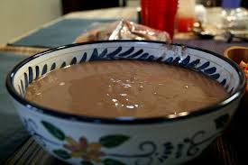

Home
Tombrown cereal recipe

How to prepare tombrown
Tombrown in a very nutritious cereal high in protein, that's also very easy to prepare, i'll show you step by step how too
ingredients needed
- tombrown powder
- water
- milk
- sugar
Steps
- put two cups of water in a kettle to boil
- mix 5 spoon of the tombrown powder with very little warm water
- pour about half cup of the boiling water into the tombrown powder and keep mixing till it teak
- add your sugar and milk till taste
- enjoy!